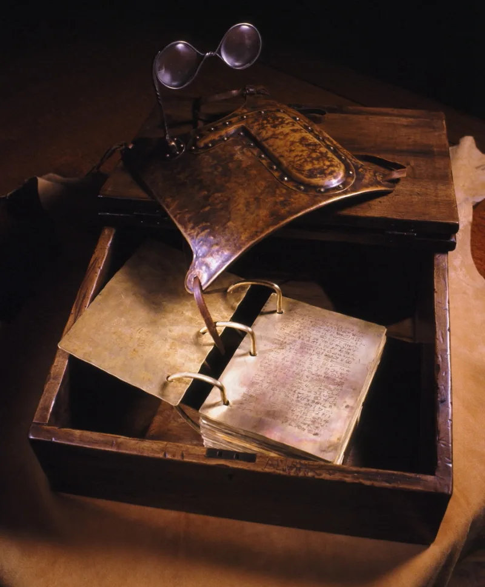
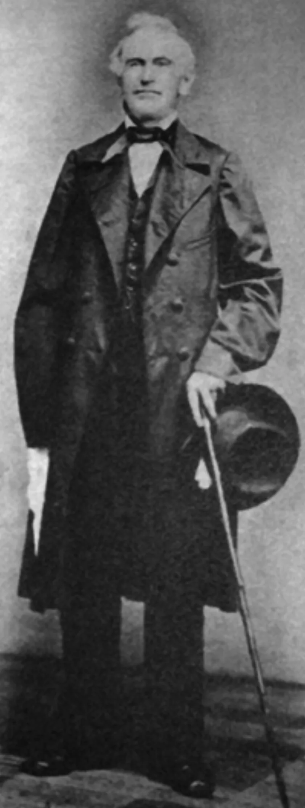

The LDS answer holds up. Do not lead with this one.
Joseph Smith reading from gold plates, perhaps with a curtain, writing down what he read. That is what church manuals and paintings showed for about 150 years.
Something different. He put a brown stone into his hat, buried his face in it to block the light, and dictated.
The plates were often covered, or in another room, or not there at all. That comes from Emma Smith, David Whitmer and Martin Harris — insiders, not critics.
He had used the same stone earlier for treasure-seeking, which is what brought him before a court in 1826.
This one has a clear answer — the church now teaches it openly. The Gospel Topics essay says so, the Joseph Smith Papers document it, and the church published photographs of the stone in 2015.
The scandal was the silence, not the stone.
"Have you seen the church's photos of the seer stone? What did you picture before that?"


The church now teaches the seer stone openly, in essays, Saints, and 2015 photographs.
Four replies, and the first is decisive. The church now teaches this openly. It is in the Gospel Topics essay, the Joseph Smith Papers, the Saints volumes, and the 2015 photographs in the Ensign. The sources were published in the nineteenth century and discussed in BYU Studies long before the internet found them. There was no suppression.
Second, 'Urim and Thummim' was used loosely at the time. It covered both the Nephite interpreters and the single stone. That makes the older telling imprecise rather than false.
Third, the method is beside the point in theology. If revelation is real, the instrument is incidental, and the Bible has comparable objects. Fourth, Skousen and Carmack argue the dictation was tightly controlled, which the seer-stone account supports.
This one is answered: the church teaches it openly now, so do not lead with it.
On the history, the church has conceded fully. The concession is in official curriculum now. Nobody disputes the facts.
Two things remain, and both are matters of meaning rather than evidence. The plates were not needed for the translation. That sits oddly beside the long story of digging them up and guarding them. And the stone that produced scripture is the stone he had used to hunt treasure.
The criticism as it is usually told, that the method was hidden, has been answered.